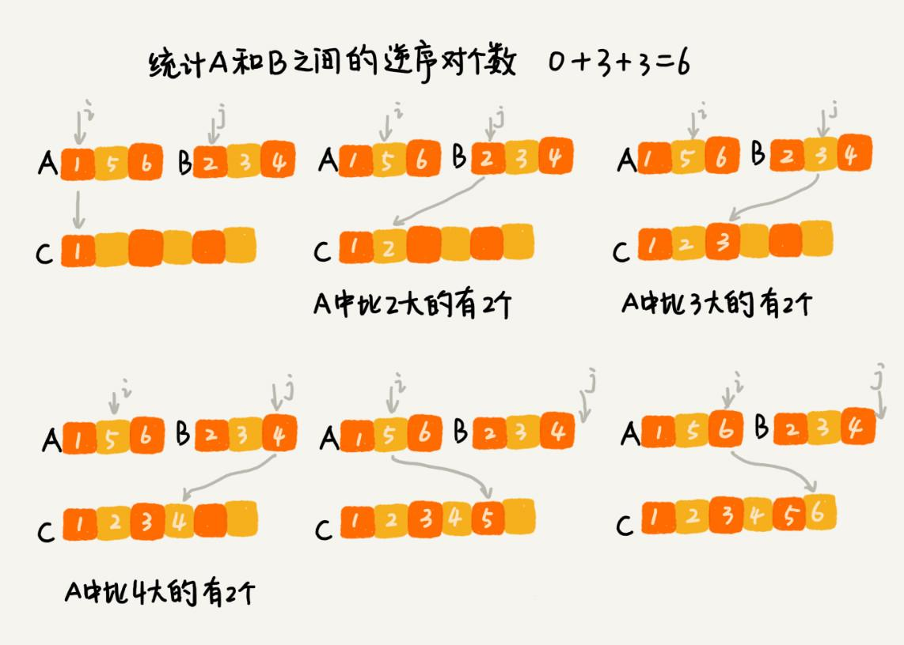

本文最后更新于：9 个月前
MapReduce 是 Google 大数据处理的三驾马车之一，另外两个是 GFS 和 Bigtable。它在倒排索引、PageRank 计算、网页分析等搜索引擎相关的技术中都有大量的应用。
尽管开发一个 MapReduce 看起来很高深，感觉跟遥不可及。实际上，万变不离其宗，它的本质就是一种算法思想，分治算法。
如何理解分治算法？
为什么说 MapRedue 的本质就是分治算法呢？先来看，什么是分治算法？
分治算法（divide and conquer）的核心思想其实就是四个字，分而治之 ，也就是将原问题划分成 n 个规模较小，并且结构与原问题相似的子问题，递归地解决这些子问题，然后再合并其结果，就得到原问题的解。
这个定义看起来有点类似递归的定义。关于分治和递归的区别，在排序（下）的时候说过，分治算法是一种处理问题的思想，递归是一种编程技巧。实际上，分治算法一般都比较适合用递归来实现。分治算法的递归实现中，每一层递归都会涉及这样三个操作：
分解：将原问题分解成一系列子问题；
解决：递归地求解各个子问题，若子问题足够小，则直接求解；
合并：将子问题的结果合并成原问题。
分治算法能解决的问题，一般需要满足下面这几个条件：
原问题与分解成的小问题具有相同的模式；
原问题分解成的子问题可以独立求解，子问题之间没有相关性，这一点是分治算法跟动态规划的明显区别；
具有分解终止条件，也就是说，当问题足够小时，可以直接求解；
可以将子问题合并成原问题，而这个合并操作的复杂度不能太高，否则就起不到减小算法总体复杂度的效果了。
分治算法应用举例分析
理解分治算法的原理并不难，但是要想灵活应用并不容易。
还记得在排序算法里讲的数据的有序度、逆序度的概念吗？当时讲到，用有序度来表示一组数据的有序程度，用逆序度表示一组数据的无序程度。
假设有 n 个数据，期望数据从小到大排列，那完全有序的数据的有序度就是 $\frac {n(n-1)} 2$，逆序度等于 0；相反，倒序排列的数据的有序度就是 0，逆序度是 $\frac {n(n-1)} 2$。除了这两种极端情况外，通过计算有序对或者逆序对的个数，来表示数据的有序度或逆序度。
现在的问题是，如何编程求出一组数据的有序对个数或者逆序对个数呢？因为有序对个数和逆序对个数的求解方式是类似的，所以可以只思考逆序对个数的求解方法。
最笨的方法是，拿每个数字跟它后面的数字比较，看有几个比它小的。把比它小的数字个数记作 k，通过这样的方式，把每个数字都考察一遍之后，然后对每个数字对应的 k 值求和，最后得到的总和就是逆序对个数。不过，这样操作的时间复杂度是 $O(n^2)$。那有没有更加高效的处理方法呢？
用分治算法来试试。套用分治的思想来求数组 A 的逆序对个数。可以将数组分成前后两半 A1 和 A2，分别计算 A1 和 A2 的逆序对个数 K1 和 K2，然后再计算 A1 与 A2 之间的逆序对个数 K3。那数组 A 的逆序对个数就等于 K1 + K2 + K3。
前面讲过，使用分治算法其中一个要求是，子问题合并的代价不能太大，否则就起不了降低时间复杂度的效果了。那回到这个问题，如何快速计算出两个子问题 A1 与 A2 之间的逆序对个数呢？
这里就要借助归并排序算法了。如何借助归并排序算法来解决呢？
归并排序中有一个非常关键的操作，就是将两个有序的小数组，合并成一个有序的数组。实际上，在这个合并的过程中，就可以计算这两个小数组的逆序对个数了。每次合并操作，都计算逆序对个数，把这些计算出来的逆序对个数求和，就是这个数组的逆序对个数了。

翻译成了代码如下，可以结合着图和文字描述一起看下。
private int num = 0; // 全局变量或者成员变量
public int count(int[] a, int n) {
num = 0;
mergeSortCounting(a, 0, n-1);
return num;
}
private void mergeSortCounting(int[] a, int p, int r) {
if (p >= r) return;
int q = (p+r)/2;
mergeSortCounting(a, p, q);
mergeSortCounting(a, q+1, r);
merge(a, p, q, r);
}
private void merge(int[] a, int p, int q, int r) {
int i = p, j = q+1, k = 0;
int[] tmp = new int[r-p+1];
while (i<=q && j<=r) {
if (a[i] <= a[j]) {
tmp[k++] = a[i++];
} else {
num += (q-i+1); // 统计 p-q 之间，比 a[j] 大的元素个数
tmp[k++] = a[j++];
}
}
while (i <= q) { // 处理剩下的
tmp[k++] = a[i++];
}
while (j <= r) { // 处理剩下的
tmp[k++] = a[j++];
}
for (i = 0; i <= r-p; ++i) { // 从 tmp 拷贝回 a
a[p+i] = tmp[i];
}
}有很多人经常说，某某算法思想如此巧妙，我是怎么也想不到的。实际上，确实是的。有些算法确实非常巧妙，并不是每个人短时间都能想到的。比如这个问题，并不是每个人都能想到可以借助归并排序算法来解决，不夸张地说，如果之前没接触过，绝大部分人都想不到。但是，如果告诉你可以借助归并排序算法来解决，那你就应该要想到如何改造归并排序，来求解这个问题了，只要你能做到这一点，就很棒了。
关于分治算法，这还有两道比较经典的问题，你可以自己练习一下。
二维平面上有
n个点，如何快速计算出两个距离最近的点对？有两个
n*n的矩阵A，B，如何快速求解两个矩阵的乘积C=A*B？
分治思想在海量数据处理中的应用
分治算法思想的应用是非常广泛的，并不仅限于指导编程和算法设计。它还经常用在海量数据处理的场景中。前面讲的数据结构和算法，大部分都是基于内存存储和单机处理。但是，如果要处理的数据量非常大，没法一次性放到内存中，这个时候，这些数据结构和算法就无法工作了。
比如，给 10GB 的订单文件按照金额排序这样一个需求，看似是一个简单的排序问题，但是因为数据量大，有 10GB，而机器的内存可能只有 2、3GB 这样子，无法一次性加载到内存，也就无法通过单纯地使用快排、归并等基础算法来解决了。
要解决这种数据量大到内存装不下的问题，就可以利用分治的思想。可以将海量的数据集合根据某种方法，划分为几个小的数据集合，每个小的数据集合单独加载到内存来解决，然后再将小数据集合合并成大数据集合。实际上，利用这种分治的处理思路，不仅仅能克服内存的限制，还能利用多线程或者多机处理，加快处理的速度。
比如刚刚举的那个例子，给 10GB 的订单排序，就可以先扫描一遍订单，根据订单的金额，将 10GB 的文件划分为几个金额区间。比如订单金额为 1 到 100 元的放到一个小文件，101 到 200 之间的放到另一个文件，以此类推。这样每个小文件都可以单独加载到内存排序，最后将这些有序的小文件合并，就是最终有序的 10GB 订单数据了。
如果订单数据存储在类似 GFS 这样的分布式系统上，当 10GB 的订单被划分成多个小文件的时候，每个文件可以并行加载到多台机器上处理，最后再将结果合并在一起，这样并行处理的速度也加快了很多。不过，这里有一个点要注意，就是数据的存储与计算所在的机器是同一个或者在网络中靠的很近（比如一个局域网内，数据存取速度很快），否则就会因为数据访问的速度，导致整个处理过程不但不会变快，反而有可能变慢。
总结
分治算法用四个字概括就是“分而治之”，将原问题划分成 n 个规模较小而结构与原问题相似的子问题，递归地解决这些子问题，然后再合并其结果，就得到原问题的解。这个思想非常简单、好理解。
本篇讲了两种分治算法的典型的应用场景，一个是用来指导编码，降低问题求解的时间复杂度，另一个是解决海量数据处理问题。比如 MapReduce 本质上就是利用了分治思想。
人们也时常感叹 Google 的创新能力如此之强，总是在引领技术的发展。实际上，创新并非离我们很远，创新的源泉来自对事物本质的认识。无数优秀架构设计的思想来源都是基础的数据结构和算法，这本身就是算法的一个魅力所在。
思考
为什么说
MapReduce的本质就是分治思想？刚刚举的订单的例子，数据有
10GB大小，可能给你的感受还不强烈。那如果要处理的数据是1T、10T、100T这样子的，那一台机器处理的效率肯定是非常低的。而对于谷歌搜索引擎来说，网页爬取、清洗、分析、分词、计算权重、倒排索引等等各个环节中，都会面对如此海量的数据（比如网页）。所以，利用集群并行处理显然是大势所趋。一台机器过于低效，那就把任务拆分到多台机器上来处理。如果拆分之后的小任务之间互不干扰，独立计算，最后再将结果合并。这不就是分治思想吗？
实际上，
MapReduce框架只是一个任务调度器，底层依赖GFS来存储数据，依赖Borg管理机器。它从GFS中拿数据，交给Borg中的机器执行，并且时刻监控机器执行的进度，一旦出现机器宕机、进度卡壳等，就重新从Borg中调度一台机器执行。尽管
MapReduce的模型非常简单，但是在Google内部应用非常广泛。它除了可以用来处理这种数据与数据之间存在关系的任务，比如MapReduce的经典例子，统计文件中单词出现的频率。除此之外，它还可以用来处理数据与数据之间没有关系的任务，比如对网页分析、分词等，每个网页可以独立的分析、分词，而这两个网页之间并没有关系。网页几十亿、上百亿，如果单机处理，效率低下，就可以利用MapReduce提供的高可靠、高性能、高容错的并行计算框架，并行地处理这几十亿、上百亿的网页。前面讲过的数据结构、算法、解决思路，以及举的例子中，有哪些采用了分治算法的思想呢？除此之外，生活、工作中，还有没有其他用到分治算法的地方呢？你可以自己回忆、总结一下，这对你将零散的知识提炼成体系非常有帮助。欢迎留言和我分享。
本博客所有文章除特别声明外，均采用 CC BY-SA 3.0协议 。转载请注明出处！